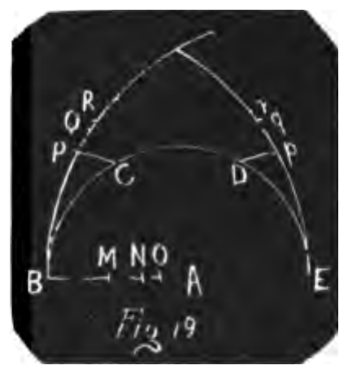

§ 67: Suddivisione binaria in 4, 8, 16 parti eguali¶
67. Prob. Proseguire a suddividere in due parti eguali colla più semplice costruzione (fig. 18), la \(AM\) in \(N\); la \(AN\) in \(O\); ecc. all’infinito.
Sol. I. Essendo stata descritta la semicirconferenza \(BCDE\) col raggio \(AB\) (§ 64), e collo stesso raggio, e col centro \(B\) l’arco indefinito \(P'CAp'\); coi centri \(E\) e \(B\), e col raggio \(BE\) i due archi \(R'Q'P'Bp'q'r'\), \(PQRErqp\); col centro \(E\), raggio \(EC\) l’arco \(PCp\); se coi centri \(P'\) e \(p'\), raggio \(AB\) si descrivano due archi; essi si taglieranno in \(M\) al mezzo della \(AB\) (Sol. V, § 66). Se coi due centri \(P\) e \(p\), raggio \(PE\) si descrivano due archi; essi si taglieranno pure nel medesimo punto \(M\) (Sol. III, § 66).
Ora si faccia ad \(AP' = BQ' = Bq' = q'N = Q'N\) (§ 11). Sarà il punto \(N\) alla metà della \(AM\).
Si faccia ad \(AQ' = BR' = Br' = r'O = R'O\). Sarà il punto \(O\) alla metà della \(AN\).
Seguitando collo stesso metodo, si dividerebbe \(AO\) in due parti eguali ecc. all’infinito.
Dim. S’immagini una retta \(P'A\), che divide in due la base \(BE\) del triangolo \(P'BE\) (§ 12). Sarà \((BP')^2 + (P'E)^2 = 2(AB)^2 + 2(AP')^2\) (§ 26). Quindi sostituiti i valori di \(BP' = AB\) e di \(P'E = 2\,AB\), e sottratto \(2(AB)^2\); si avrà \(3(AB)^2 = 2(AP')^2\), e quindi dividendo per 2, risulterà \((AP')^2 = (BQ')^2 = \frac{3}{2}(AB)^2\). Essendo poi \(N\) nella retta \(BE\) (§ 13); sarà il triangolo isoscele \(Q'BN\) simile al triangolo isoscele \(Q'BE\) a cagione dell’angolo comune in \(B\) (5 e 32, lib. I, e 4, lib. VI). Quindi \((BQ')^2 = BN \cdot BE\) (17, lib. VI). Quindi paragonando tra loro i due valori di \((BQ')^2\), si avrà \(\frac{3}{2}(AB)^2 = BN \cdot BE = 2\,BN \cdot AB\),
f. 0060 · p. 35e dividendo per \(2\,AB\), si avrà \(\frac{3}{4}AB = BN\). Dunque \(AN = \frac{1}{4}AB\). Istessamente si avrà \((BQ')^2 + (Q'E)^2 = 2(AB)^2 + 2(AQ')^2\) (§ 26), quindi \(\frac{3}{2}(AB)^2 + 4(AB)^2 = 2(AB)^2 + 2(AQ')^2\), e riducendo si avrà \(\frac{7}{4}(AB)^2 = (AQ')^2 = (BR')^2\). Ma \((BR')^2 = BO \cdot BE = 2\,AB \cdot BO\). Dunque \(\frac{7}{4}(AB)^2 = 2\,AB \cdot BO\), e quindi \(\frac{7}{8}AB = BO\); ed \(AO = \frac{1}{8}AB\); ecc.
Sol. II. Si faccia ad \(AP = EQ = Eq = qN = QN\). Sarà il punto \(N\) alla metà della \(AM\). Si faccia ad \(AQ = ER = Er = rO = RO\). Sarà il punto \(O\) alla metà della \(AN\). Seguitando collo stesso metodo si dividerebbe in due la \(AO\), così via via all’infinito.
Dim. Poichè si ha (§ 26) \((PE)^2 + (PB)^2 = 2(AB)^2 + 2(AP)^2\), e sostituiti i valori di \((PE)^2 = (CE)^2 = 3(AB)^2\) (12, lib. III) (§ 2), e di \((PB)^2 = (BE)^2 = 4(AB)^2\); si ha \(7(AB)^2 = 2(AB)^2 + 2(AP)^2\). Quindi tolti via \(2(AB)^2\), e dividendo per 2, si ha \(\frac{5}{2}(AB)^2 = (AP)^2 = (EQ)^2\). Ma \((EQ)^2 = EN \cdot EB\) a cagione de’ triangoli isosceli simili \(EQN, EQB\) (§ 13) (5 e 32, lib. I, 4 e 17 lib. VI). Dunque \(\frac{5}{2}(AB)^2 = EN \cdot EB = 2\,EN \cdot AB\); e dividendo per \(2\,AB\) si ottiene \(\frac{5}{4}AB = EN\); ed \(AN = \frac{1}{4}AB\).
Collo stesso metodo ragionando si avrà \((QE)^2 + (QB)^2 = 2(AB)^2 + 2(AQ)^2\). Quindi \(\frac{5}{2}(AB)^2 + 4(AB)^2 = 2(AB)^2 + 2(AQ)^2\). Quindi pure \(\frac{9}{4}(AB)^2 = (AQ)^2 = (ER)^2 = EO \cdot EB = 2\,AB \cdot EO\). Quindi dividendo per \(2\,AB\), si ottiene \(\frac{9}{8}AB = EO\); ed \(AO = \frac{1}{8}AB\); ecc.
Sol. III. Col centro \(A\), raggio \(AB\) descritta la semicirconferenza \(BCDE\) (§ 64) (fig. 19), collo stesso raggio \(AB\), e coi centri \(B\) ed \(E\) descritti gli archi \(CP, Dp\) indefiniti; cogli stessi centri \(B\) ed \(E\), e col raggio \(BE\) descritti gli archi \(Epqr, BPQR\); si sarà potuto trovare il punto \(M\) col fare \(PM = PB\); \(EM = Pp\) (Soluz. II, § 66).


Ora si faccia ad \(AP = BQ = QN = Eq\). Si faccia pure a \(Qq = EN\). Sarà il punto \(N\) alla metà della \(AM\). Si faccia parimente ad \(AQ = BR = RO = Er\). Si faccia pure ad \(Rr = EO\). Sarà il punto \(O\) alla metà della \(AN\). Ecc.
Dim. Fatte le dovute sostituzioni nella Fig. 5 (§ 23);
f. 0061 · p. 36si avrà \(Qq \cdot BE = (BE)^2 - (BQ)^2\). Ma \(BE = 2\,AB\); \((BQ)^2 = \frac{3}{2}(AB)^2\) (Vedi la dimostr. della Sol. I). Dunque \(2\,Qq \cdot AB = 4(AB)^2 - \frac{3}{2}(AB)^2\), e dividendo per \(2\,AB\), e riducendo si ha \(Qq = \frac{5}{4}AB\). Dunque anche \(EN = \frac{5}{4}AB\). Dunque essendo la \(AB\) la stessa nelle due Figure 18 e 19, saranno pure gli stessi i lati dei due triangoli \(Q'NE\) Fig. 18, \(QNE\) Fig. 19. Quindi sovrapponendo i tre punti \(B, Q, E\) della Fig. 19 sovra i tre \(B, Q', E\) della 18, anche i punti \(N\) delle due Figure coincideranno. Dunque ecc.
Istessamente facendo le dovute sostituzioni nella Fig. 5 (§ 23), si ha \(Rr \cdot BE = (BE)^2 - (BR)^2\). Ma \((BR)^2 = \frac{7}{4}(AB)^2\) (Dimostr. della Soluz. I); dunque \(Rr \cdot BE = (BE)^2 - \frac{7}{4}(AB)^2\). Ovvero sostituendo \(2\,AB\) a \(BE\); \(2\,AB \cdot Rr = 4(AB)^2 - \frac{7}{4}(AB)^2\). E dividendo per \(2\,AB\), e riducendo si ha \(Rr = \frac{9}{8}AB = OE\). Dunque coincidendo i punti \(E, R, B\) di questa Fig. 19 coi punti \(E, R', B\) della Fig. 18, ed essendo qui le \(RO\) ed \(EO\) eguali rispettivamente alle \(R'O, EO\) della Fig. 18; coinciderà anche il punto \(O\). Quindi \(O\) sarà alla metà di \(AN\). Nella stessa guisa si dimostrerebbe in seguito fino all’infinito.
Si potrebbero usare altre maniere di trovare gli stessi punti; ma passeremo ad altre divisioni della \(AB\) in un diverso numero di parti.